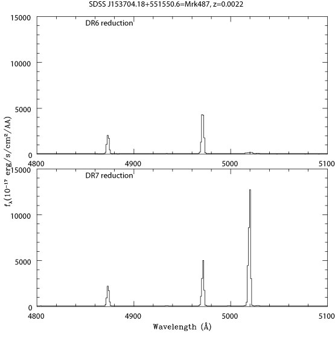

Spectra
Up: Data Products Sections: Images - Object lists - Spectra - Tiling
Down: Quality of spectra - About SDSS spectra - Caveats
DR7 contains completely reprocessed spectra.
In DR7, there have been improvements to the algorithms
which photometrically calibrate the spectra, and all spectra have been
re-reduced. The new spectro "rerun number" is 26.
About spectroscopic samples
Normal survey plates
The spectroscopic survey is predominantly a survey for
There is also a large number of spectra of stars. Brown dwarfs, ROSAT and
FIRST counterparts are targetted as well. Refer to the target selection quality or target selection algorithm for
details about the spectroscopic survey targets.
Extra and special plates, including SEGUE
New since DR4 is the publication of "extra" and
"special" plates. Extra plates are repeat
observations of normal survey plates. These have the same plate number
as the original observation, but a different MJD and usually a
different mapping between fiber number and
ra,dec. Special plates are spectroscopic
observations made under a variety of special programs which are
described on the special spectra
page.
Note the caveat below about querying
special-plate data in the CAS (including SEGUE).
Getting and using spectra
The spectra distributed by the SDSS have been sky subtracted,
corrected for telluric absorption spectrophotometrically
calibrated by the Spectro2d pipeline. Spectral classification,
redshift determination, and emission and absorption line measurements
are carried out by the "1D" pipeline. DR7
contains the outputs from two independent 1D pipelines: the
spectro1d code that has also been used in all previous
releases, and the specBS
code whose outputs ("Princeton reductions") were previously
available only from spectro.princeton.edu. The CAS
contains only the spectro1d outputs as before; the
specBS outpus are available through the DAS.
The algorithms page
contains details about spectroscopic data processing for all pipelines.
Since DR1, the Data Archive Server has been providing the same spectrum in two
files:
- Spectro2d
spPlate*.fits:
all calibrated spectra and supporting data (signal-to-noise,
resolution, quality flags and similar) from a single plate,
without any parameters or continuum fits. In
DR7: the spPlate files now also contain the sky spectra
that have been used for sky subtraction of each spectrum.
See the spPlate*.fits
data model for details of the file contents. There is one 2d
directory for every plate number in the DAS that contains all
spPlate files for that plate, including those for
different MJDs where repeats are available; e.g. http://das.sdss.org/spectro/2d_26/0644/
- Spectro1d
spSpec*.fits:
multiple fits extensions (images and tables) with the calibrated
spectrum, a continuum-subtracted spectrum, and all measured parameters
(redshift, line fits, line indices, per-pixel resolution). See
the spSpec*.fits
data model for details of the file contents, and how to read an spSpec file. There
is one spSpec file per plate/MJD/fiber combination, found in a
parallel 1ddirectory tree with one directory
per plate, e.g. http://das.sdss.org/spectro/1d_26/0644/1d/
- In addition, spectro1d produces
spPlot*.gif,.ps
plots of the spectra with line locations for the best-fitting
redshift, again in one directory per plate, e.g. http://das.sdss.org/spectro/1d_26/0644/gif/
All of the above files are available through the DAS query form.
DR7 provides additional spectroscopic data:
- spectro2d
spCFrame*.fits:
SDSS spectra are typically combined from 3 or more individual
exposures of 15 minutes each. The individual flux-calibrated
spectrograph exposures are available in spCFrame*.fits
files. They contain spectra in the spectrograph's native
wavelength mapping, which is neither linear in wavelength nor
log-wavelength.
specBS
outputs ("Princeton reductions"; see http://spectro.princeton.edu):
There is one file of each type for every plate/MJD
combination.sspp stellar parameter pipeline outputs: Most of
these outputs are available only through two new tables in the CAS:
- Line index equivalent widths for stars:
sppLines
- Stellar atmospheric parameters ([Fe/H], log g, Teff) for stars:
sppParams
for all the SEGUE
spectra and a large fraction of the main
database spectra classified as stars (not galaxies or quasars).
In the DAS, we provide bulk versions of the stellar parameter
outputs in one directory per plate/MJD combination, e.g. spectro/sspp_26/0644-52149,
which include .csv versions of the sppParams and sppLines
tables and some additional information and plots not available through the
CAS.
The specBS outputs are available through the DAS query form. The
spCFrame files are not available through the DAS query
form, but can be found in the same 2d directories as the
spPlate files in the DAS; these also contain the specBS
outputs. E.g., http://das.sdss.org/spectro/2d_26/0644/.
Bulk download of spectra, spectroscopic parameters, and corresponding imaging data
Very often one wishes to obtain all the SDSS photometric (imaging
camera) data associated with each spectrum. One can obtain this
information most easily for nearly all plates through the SQS
interface by selecting imaging parameters to return with your selected
spectra.
For those who prefer working with the full fits files of spectra
and imaging catalogs, make available a special set of files
(spObj-*.fit) containing a bundled version of the
spectroscopic data and all the corresponding imaging data.
These files are available via
the DAS by requesting the data
product tsObjFromMap (or spObj) for the plates you
wish. To get these files in bulk for the entire survey, see
the page on redshift catalogs and SDSS
spectra and corresponding imaging data.
More on data access
The data access page contains various
query forms to get spectra by coordinates, or to search for spectra by
redshift, object magnitude, color etc., and to retrieve them from the
archive. In particular, the Catalog Archive Server provides
a fast search capability for object lists and spectroscopic parameters
as well as pointers to the files in the Data Archive Server, whose
structure is explained on the Data
Archive Server structure and contents page. The Spectro Query
Server query form is dedicated to the search of the spectroscopic
database. You can also download fits tables with the classification,
redshifts and other information from the page with redshift catalogs and
spectro+imaging data.
Please note the caveats below, which are
essential to obtain meaningful scientific results from analysing SDSS
spectra, in particular the redshift status
caveat.
Quality of spectra
About the spectra
For details about the spectrographs, see the spectrograph
page.
| Plate diameter | 3 degrees |
| Fiber diameter | 3 arcsec |
| Wavelength coverage | 3800 - 9200 Å |
| Wavelength calibration | better than 5 km/s |
| Wavelength reference | heliocentric vacuum wavelengths |
| Binning | log-lambda, 69 km/s per pixel |
| Resolution | 1850 to 2200; value for each spectrum in spPlate*.fits |
| Flux Units | 10-17 erg/s/cm2/Å |
Further details
- Error and mask arrays, and the sky spectrum
subtracted from each object spectrum, are available (see the data model.)
- Spectroscopic observations are undertaken in non-photometric conditions
when the imaging camera is not in use. At least three
fifteen-minute exposures are taken until the cumulative mean S/N
per pixel exceeds 4 for a fiducial fiber magnitude of
g = 20.2 and i = 19.9.
- We provide the cross-correlation
templates used to obtain cross-correlation
redshifts.
Caveats
DAS only plates
A few Legacy and SEGUE plates either did not have
sufficient exposure time to reach their target S/N in
order to be declared 'done'. Also, in the case of SEGUE,
3 plates have bright but not faint equivalents (or vice-versa).
These plates do not appear in the CAS or in the list of
all plates, however, they are available in the DAS.
The plate-mjd numbers for these plates are:
plate-mjd Why not in CAS platex table:
-----------------------------------------------------------------------
0356-51779 S/N too low -- plate not done (not enough exposure)
1112-53180 S/N too low -- plate not done
1858-53271 SEGUE test plate, high DEC, never made it to CAS
2309-54441 S/N too low -- SEGUE plate
2333-53676 M71 very bright plate, lots of saturation, only 320/640 done
2535-54632 SEGUE bright, faint matching plate not done
2640-54474 BAOTest plate, test plate for SDSS-III
2716-54629 SEGUE bright, faint matching plate not done
2813-54650 SEGUE bright, insufficient S/N, plate not done
2851-54485 SEGUE dup pointing of plate 2045.
2962-54578 don't have correct tsObj file, Low S/N, plate not done
Note on Radial Velocities
The DAS records ELODIE-matched template redshifts for all stars
as the quantity elodie_z in the spZbest* file for
each plate. The CAS records this as the quantity elodierv in
the sppParams table in the BESTDR7 Context. The elodierv =
c*elodie_z+7.3 km/s, where the 7.3 is an empirically
derived offset putting the elodierv of all stars on
a system consistent with that of other literature measures
of known radial velocity standards.
Two other redshifts, the specBS redshift and the Spectro redshift
are available, unaltered, in the sppParams table (or spbsparams view).
These redshifts, primarily for galaxy work, do not have
the 7.3 km/s offset applied.
Redshift status
Only 1% of the objects have an "unknown" classification, usually
because of low signal-to-noise ratio or completely featureless
spectra. The redshifts of all but a few tenths of a percent of the
remainder are believed to be correct. To identify the few
objects with unreliable redshifts, be sure to consider the confidence
we have assigned to each redshift (z_conf in the spSpec*.fits primary header,
and the status zStatus
and zWarnin
of the redshift measurement, which may have failed.). A
useful cut on the redshift confidence is z_conf > 0.35
(or zConf > 0.35 in the SQL database).
Zero equivalent width of emission lines, especially H alpha
Galactic extinction correction
Night sky emission lines
The night sky emission lines at 5577Å, (when there is auroral
activity) at 6300Å, 6363Å, and in the OH forest in the red
can be very strong, and leave significant residuals in the spectra
whose amplitude is occasionally underestimated by the noise model. Be
cautious about interpreting the reality of weak features close to
these lines.
Plates with not-quite-perfect spectrophotometry
A small number of plates, given in the list
of not-quite-perfect plates, suffered from a variety of minor
problems. The CCD frames for several plates suffered from a transient
electronic problem in the red camera in Spectrograph 2, causing the
columns of the CCD to be misaligned on readout. This was fixed in
software, and we believe the data to be reliable. Another set of
plates labeled "Spectrograph Collimation Problem" suffered
from having the spectrograph collimator improperly focused. This
problem caused a mismatch between the flatfields and the science
exposure instrumental profile shapes on the CCD in both the spatial
and wavelength directions, causing the optimal extraction process to
reject an excessive number of pixels. This problem was fixed in
software, and comparing overlapping objects from adjacent plates
confirms that the redshifts from these problematic plates are
unbiased. However, the spectra themselves should not be used for
precision work or spectrophotometry. Other plates have individual
problems as noted. E.g., during the exposure of one plate, light from
an LED somewhere on the telescope found its way to the spectrographs,
resulting in an artificial excess of light centered roughly at
6500Å; the spectrophotometry of this plate is quite poor.
Mismatches between spectra and photometric data
In a few cases, the fiber mapping failed which identifies which
fiber has been plugged into which hole. When this happens for two or
more objects on the sample plate, there is the possibility of wrong
matches between spectra and photometric objects. There are 123 objects
for which the mapping between object and spectrum cannot be
established ("unmapped fibers"); their ra/dec is listed as
-9999 in the spectroscopic data set but synthetic fiber magnitudes
(mag_0, mag_1, mag_2 in the specObj tables
in the CAS, mag_g, mag_r, mag_i in the
spSpec*.fit files) greater than 0 (i.e., use the
synthetic magnitudes to distinguish the unmapped fibers from the 2221
fibers which were broken completely at the time of observations and
did not yield a spectrum at all).
Errors in the deblending algorithm in the target reductions
caused spectroscopy to be carried out occasionally on non-existent
objects (e.g., diffraction spikes of bright stars or satellite
trails). Many of these objects no longer exist in the best
imaging reductions with its improvements to the deblender. In other
cases, the photometric pipeline timed out during the best
imaging reductions in fields for which target imaging proceeded
without problem, so that the best photometry is missing for
bona-fide objects. This predominantly happens in fields close to a few
very bright stars. We expect to recover objects from these ``timeout
holes'' in future data releases.
The special plates have special issues
regarding photometric matches. Some of the special plates were
targeted using photometry that is not part of DR7, or not even SDSS
photometry. Therefore, the SDSS photometry for objects on plates 797,
1468, 1471, 1472, 1665, and 1666 is only available through DRsup.
In addition, special plates with SDSS photometry are different from
regular SDSS plates in that they have no tiling information associated
with them. Therefore, the specPhotoAll table is not
populated with all entries from special plates.
Querying SEGUE data is explained in a SEGUE sample SQL
query.
To obtain photometric information for non-SEGUE special-plate
spectra, perform the following join:
select columns
from specObjAll as so
inner join photoObj as po on so.bestobjid = po.objid
Galaxy velocity dispersion measurements
The velocity dispersion measurements distributed with SDSS spectra
use template spectra convolved to a maximum sigma of 420
km/s. Therefore, velocity dispersion sigma > 420 km/s are not
reliable and must not be used. The figure below shows the quality of
velocity dispersion error estimates.

Error distribution of the velocity dispersion
measurements from spectro1d DR6 (thin black solid line), spectro1d DR5
(dotted red line), specBS (dashed blue line), and B03 (dotted-dashed
green line). The thick solid line was obtained by comparing repeated
measurements.
We recommend the user to not use SDSS velocity dispersion measurements
for:
- spectra with median per-pixel S/N < 10
- velocity dispersion estimates smaller than about 70 km s-1
given the typical S/N and the instrumental resolution of the SDSS
spectra
Also note that the velocity dispersion measurements are not corrected to a
standard relative circular aperture.
See the velocity dispersion
algorithm for details.
"Bonus" plates beyond the survey limits
A few plates target objects beyond the survey limits for a
particular survey stripe, stripe 10 (see survey coverage page). These
plate/MJD combinations are:
| Plate | MJD |
| 343 | 51692 (straddles stripe limits) |
| 344 | 51693 |
| 345 | 51690 |
| 346 | 51693 |
| 348 | 51671 |
| 364 | 52000 |
Their corresponding targetimaging data does not
contain any PRIMARY objects. Objects from this region are
therefore not available via a normal search of the target
object lists. To find the target data, select on status &
0x402 (both GOOD and OK_SCANLINE)
instead of selecting on the PRIMARY flag being set in
status. The information is also contained in the
spObj-*.fit files, which are available for all plates.
These files are available via the DAS by requesting the
data product tsObjFromMap (or spObj) for the plates you
wish. They are also available for bulk rsync or wget download via DAS through http (in
spectro/ss_SPRERUN/PLATE/spObj-*).
These objects have been declared primary in the
best data set. The CAS correctly records the positional
matches between these spectra and their counterparts in
best. However, since the corresponding targets are not
primary, the spectra are not included in the specObj and
specPhoto views in the CAS, but must be searched
explicitly in specObjAll and
photoObjAll.
Accuracy of stellar radial velocities
The accuracy of stellar radial
velocities in DR2/DR3 and beyond is described on a separate page.
Clipped Spectral Lines
The spectroscopic pipeline combines observations of a given object on the red
and blue spectrographs, and between the separate 15-minute exposures on the sky,
by fitting a tightly-constrained spline to the data, allowing discrepant points
such as cosmic rays to be rejected. This spline requires as input the effective
resolution of the spectra.
As described in the DR6 paper,
it did not do a perfect job; occasionally, very strong and sharp emission lines were erroneously
rejected by this algorithm. This turned out to be due to the fact that the spline code did not
adequately track the changing resolution of the spectra as a function of wavelength and fiber
number. Including this effect much improved the behavior of this algorithm. The figure below shows
an example spectrum of an object affected by this problem in DR6, and its improved counterpart
in DR7, as is apparent by the correct 3:1 ratio of the 5007 and 4959 Å lines of [OIII].
The total number of objects that were affected by this problem is quite small; affecting less
than 1 percent of galaxies with Hβ equivalent width >25 Å.

There is another problem, unfortunately not fixed in DR7, which has a similar effect. If the
line is so bright that it is saturated in the individual 15-minute exposures of the spectrograph,
it will also appear clipped. Unfortunately, such saturated pixels are not flagged as such,
although usually such lines are recognizeable as having an inverse variance equal to zero.
Luckily, objects with such strong emission lines are very rare, but the user should be aware
of the possibility of objects with extremely strong emission lines and unphysical or unusual line
ratios.
Last modified: Fri Oct 31 17:31:24 CET 2008